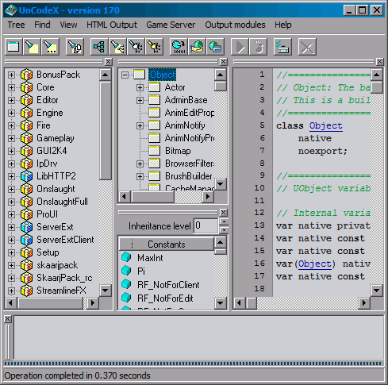

Main window

Package tree
These are all the packages found by UnCodeX. The packages with a yellow icon have been tagged.You can use inline search to find a class or package. Just start typing the name of the class to search for it, use backspace to delete characters. You can use <tab> to complete the current search string and <esc> to cancel the inline search. You can use the find next feature to find the next class/package that matches the current inline search. The inline search will automatically be canceled after a couple of seconds, the find next feature remains to work.
Right click a class or package for a pop-up menu with more options.
Class tree
This is the class inheritance tree, right click a class for some extra options or double click the class to open it. Yellow classes are in a package that has been tagged.The class tree also has the inline search feature.
Right click a class or package for a pop-up menu with more options.